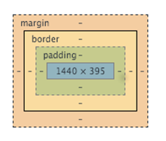

Intro to CSS Compilers
Slides available at: bit.ly/CSSCmp
Join us on social media:
#LadyDevs
#KCWiT
#CodingAndCocktailsKC
Powered By:

Kansas City Developer Conference
June 22 - 24, 2016
KCWiT 10% off Discount Code: KCWITROCKS
June 24 - 26, 2016
Presentation
Our Hosts
The Nerdery
Mentors
Photo by JD Hancock cc
Last Month - Version Control
- What Version Control is used for
- Creating Repositories
- Branching, Merging & Forking
- Interaction Through the Command Line
- Presentation & Worksheet Link
What we'll cover
- Brief CSS Review
- What CSS Compilation is and Why We Should Use It
- Features of the Sass Preprocessor
CSS Review
Syntax

Image Credit:
LearnWebCode.comBox Model
- Element Selector:
h1 { ... } - Class selector:
.my-class { ... } - ID selector:
#my-id { ... } - Descendant selector:
div p { ... }
- Properties:
- margin
- padding
- border
- font-family
- font-size
- list-style
- Remember: The last rule applied wins!
- Google Fonts
- Color Pallette
What is a CSS Compiler?
Taking input (Sass in our case) and converting (or compiling) it into something else (plain old CSS in this case) so it can be understood by a third thing (your browser in this case)
- Browsers only understand CSS
- Helps reduce complexity
- Reduce file size through minification
- Warning: Once you start using a preprocessor, only edit pre-compiled files or you will overwrite your work!
Preprocessor vs. Postprocessor
No significant technical distinction
| Preprocessor | Postprocessor |
|---|---|
| Sass, Less | PostCSS, Autoprefixer |
| Sometimes Own Syntax | CSS Syntax |
| Compiles into CSS | Compiles into CSS |
| Allows use of proposed CSS features or features not yet supported |
Development Process
- Create HTML/Style with Sass
- Compile/Build
- Deploy & View
Compiler Options
Sass
- Syntactically Awesome Stylesheets
- Ruby Sass: Written in Ruby and therefore has a Ruby Dependency
- LibSass: Allows Sass to be used outside of Ruby
- .scss (SASSy CSS) files vs. .sass files
Less
- Similar but with some slight differences in syntax and functionality
- Example: Less uses @ in front of variables, Sass uses $
- Example: Less uses mixin guards where Sass uses if statements
- Originally written in Ruby but ported to JavaScript
Sass
Why should we use them?
- Cleaner & more maintainable code
- Follow DRY (Don't Repeat Yourself) principles better
- Increase Productivity
- Selector nesting for better organization
Sass Features
- // Single-line comments that don't show in your CSS
- /* Also supports multi-line comments that do show in compiled CSS */
- Sourcemap for debugging help
Variables
$my-color: #fff;- Use these to help reduce repetition
- Easily & quickly change things like colors or font stacks in one place
- Don't replace everything, stick to common patterns
- Common uses include colors, font-stacks, numbers, layout, font sizing
Partials
- Helpful for organization - keep all like things in one file so there is only one place to make changes
- Allow you to import other scss files into each other
- Typically start the filename with an _ (Example: _variables.scss) so it doesn't get compiled into it's own CSS file
- Bring them into your main file using @import:
@import "variables"; - More advanced projects may have partials for typography, buttons, layout, forms, etc.
Nesting
- Allows for better organization nesting css selectors inside each other
- Avoid nesting more than 3 - 4 levels deep
- Debugging Warning: Nesting can "create" selectors in your CSS that don't exist in your scss file making debugging difficult
.container {
margin: 0;
padding: 0;
.item {
margin-bottom: 20px;
border-top: 2px solid blue;
}
} .container {
margin: 0;
padding: 0;
}
.container .item {
margin-bottom: 20px;
border-top: 2px solid blue;
} Mixins
Mixin Example
@mixin link-style ($link, $visit, $hover, $active) {
a {
color: $link;
&:visited {
color: $visit;
}
&:hover {
color: $hover;
}
&:active {
color: $active;
}
}
} a {
@import link-style(blue, red, darkblue, green);
text-decoration: none;
}Operations
- Allows math operations such as
$my-var*2 - Warning: Changes to my-var affect elements styled by $my-var*2 also
- String operations
$base_string: "Gin"; $add-on-string: "Tonic"; p:before { content: $base-string + " and " + $add-on-string; //Gin and Tonic }
Color Functions
- Lighten: make the given color lighter
lighten(#c0ffee, 20%) - Darken: make the given color darker
darken(#decaff, 20%) - rgba: change the alpha (opacity) value of the color
rgba(#f00d1e, 0.5)
Advanced: If Statements
$type: pina-colada;
p {
@if $type == bloody-mary {
color: red;
} @else if $type == pina-colada {
color: white;
} @else {
color: blue;
}
} Compiles to:
p {
color: white;
} Advanced: Loops
@for, @while, @each
@for $i from 1 through 3
.style-#{$i}
width: 10px * $i Compiles to:
.style-1 {
width: 10px;
}
.style-2 {
width: 20px;
}
.style-3 {
width: 30px;
} Extend
- Reduce redundancy
- Allows you to utilize styles already given to one selector in another selector
.btn {
padding:5px;
border: 1px solid #666;
color:#000;
text-decoration:none;
}
.btn-warning {
@extend .btn
background: red;
} Debugging
- Right click the element you're concerned with
- Choose inspect
- View the styles
- The sourcemap will point you to the line in your scss file where the style in question exists.

- Leave CSS expanded during development, minify for production
Converting CSS to Sass
Organization
Despite Sass being awesome, organization is still important
stylesheets/ | |-- modules/ # Common modules | |-- _all.scss # Include to get all modules | |-- _utility.scss # Module name | |-- _colors.scss # Etc... |-- partials/ # Partials | |-- _base.sass # imports for all mixins + global project variables | |-- _buttons.scss # buttons | |-- _figures.scss # figures | |-- _grids.scss # grids | |-- _typography.scss # typography | |-- _reset.scss # reset |-- vendor/ # CSS or Sass from other projects | |-- _colorpicker.scss | |-- _jquery.ui.core.scss | ... | `-- main.scss # primary Sass fileSample Structure from The Sass Way
Review
- Defined CSS Compilers
- How CSS Compilation fits in the development process
- Why we want to use CSS Compilers
- Sass features
Tonight's Worksheet
Questions?
?